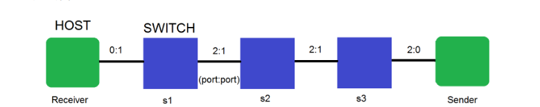
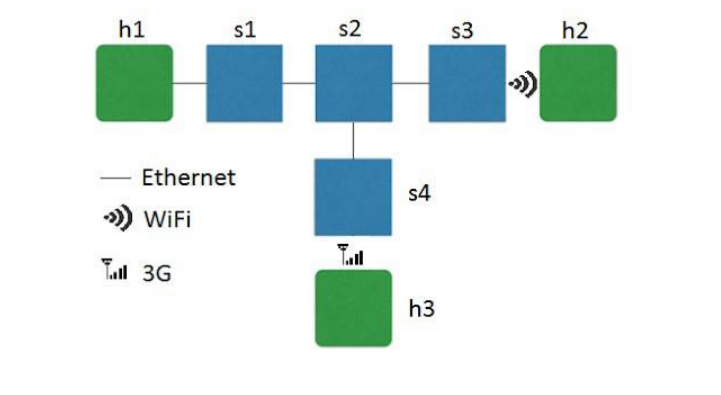

My experience prototyping large networks using Mininet
But what is Mininet?
Mininet is a software emulator to prototype a network of any size on a single machine. It allows users to simulate a network topoloy through code. For this project, I used the Python API of the software, although it is possible to find it in C++ and Java versions as well. You can find the Python API documentation here here.
The first of three projects using Mininet deals with constructing a small topology and observing

